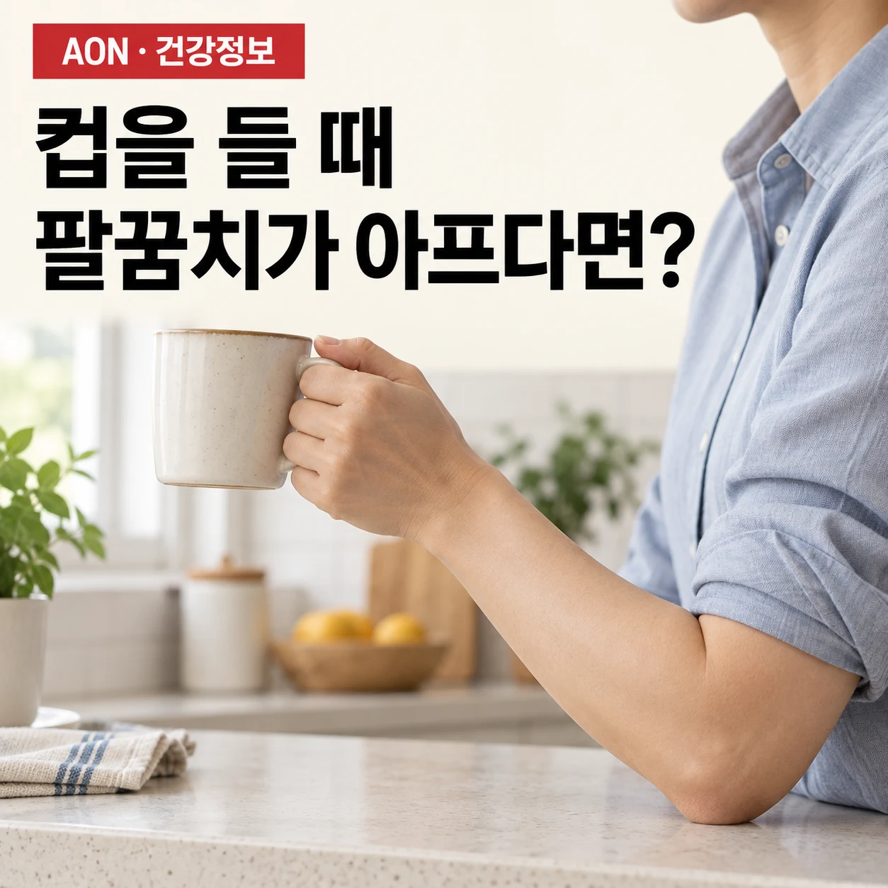

테니스엘보를 넘어, 외측 팔꿈치 건병증
컵을 들거나 장바구니를 쥘 때 팔꿈치 바깥쪽이 아프다면, 이름보다 중요한 것은 어떤 움직임이 어렵고 어느 정도의 활동을 감당할 수 있는지입니다. 일상에서 확인할 점과 운동을 다시 시작하는 원칙을 정리합니다.
팔꿈치 · 생활 속 운동 ·

이 글에서 살펴볼 내용
테니스를 치지 않아도 팔꿈치가 아플 수 있습니다
물을 채운 컵을 들어 올리거나, 장바구니를 옮기거나, 젖은 수건을 짤 때 팔꿈치 바깥쪽이 불편한가요? 이런 잡기·들기 동작에서 나타나는 통증을 흔히 ‘테니스엘보’라고 부릅니다. 이름과 달리 테니스 선수에게만 생기는 문제는 아닙니다. 다만 이 몇 가지 증상만으로 자신을 테니스엘보라고 확정할 수는 없습니다.[4]
손목을 뒤로 젖히는 근육은 팔뚝에 있고, 그 일부는 힘줄을 통해 팔꿈치 바깥쪽 뼈에 연결됩니다. 이 근육들은 손목을 움직일 뿐 아니라 손으로 물건을 잡을 때 손목을 지탱합니다. 그래서 팔꿈치를 크게 굽히지 않아도, 손에 힘을 주는 일이 불편할 수 있습니다. 평가할 때도 아픈 위치와 함께 ‘어떤 물건을 어떤 방식으로 드는가’를 살펴볼 필요가 있습니다.
‘건병증’은 힘줄이 끝났다는 뜻이 아닙니다
‘건’은 근육의 힘을 뼈에 전달하는 힘줄, ‘외측’은 바깥쪽이라는 뜻입니다. 외측 팔꿈치 건병증은 이 부위 힘줄과 관련해 통증과 기능의 어려움이 나타나는 상태를 가리킵니다. 용어가 어렵다고 곧 심각한 파열이나 영구적인 손상을 뜻하는 것은 아닙니다.
오래가는 통증을 ‘염증만 없애면 끝나는 문제’로 설명하기는 어렵습니다. 반대로 ‘염증은 전혀 없다’고 단정할 수도 없습니다. 2022년 임상진료지침은 힘줄의 변화뿐 아니라 근육 조절과 통증 처리의 변화도 함께 고려합니다. 설명의 목표는 손상을 겁주거나 통증을 무시하는 것이 아니라, 현재 불편을 이해하고 필요한 평가와 활동 조절을 선택하는 데 있습니다.[1]
쉬기 전에, 하루 중 가장 힘든 일을 찾아봅니다
먼저 ‘팔꿈치가 아프다’에서 한 단계 더 나아가, 불편이 커지는 일을 두세 가지 적어보세요. 물이 든 주전자를 한 손으로 들기인지, 장바구니를 오래 들고 걷기인지, 손잡이를 반복해서 돌리는 일인지 구분하면 조절할 요소가 보입니다. 최근 일이 몰렸는지, 무게나 반복 횟수가 갑자기 늘었는지도 함께 적습니다.
주전자에 물을 덜 채우거나 두 손으로 받치기, 짐을 나누어 옮기기, 같은 손동작이 이어지기 전에 작업을 바꾸기 등을 시도할 수 있습니다. 이는 힘줄을 ‘교정하는 정답 자세’가 아니라, 당장의 부담을 줄이는 선택지입니다. 같은 방법이 모두에게 편한 것은 아니므로 실제 작업에서 반응을 확인합니다. 증상을 악화시키는 활동을 줄이되, 모든 팔 사용을 한꺼번에 포기할 필요는 없습니다.[4]
운동은 정해진 횟수보다 알맞은 시작점이 중요합니다
2022년 지침은 아급성·만성 외측 팔꿈치 건병증에서 손목을 펴는 근육에 저항을 주는 강화운동을 다른 중재와 함께 사용하도록 권고합니다. 다만 누구에게나 맞는 최적의 무게·횟수·운동 조합이 확정된 것은 아닙니다.[1]
운동의 형태를 이해하기 위한 예로, 팔뚝을 책상에 받치고 다른 손으로 손등을 가볍게 누르면서 손목 위치를 유지하는 방법이 있습니다. 손목을 크게 움직이지 않고 힘을 쓰는 ‘등척성’ 운동입니다. 또 팔뚝을 받친 상태에서 가벼운 저항에 맞서 손목을 천천히 올리고 내리는 방법도 있습니다.[4]
이 예시는 개인 처방이 아닙니다. 손목을 고정하는 운동이 불편한 사람에게 같은 동작을 억지로 시키거나, 무게를 빨리 올리는 것이 목표는 아닙니다. 운동 중 통증이 뚜렷하게 커지거나 저림이 생기면 그 동작을 중단하고 확인해야 합니다. 시작 강도와 진행 속도는 증상, 기존 질환, 업무량을 고려해 전문가와 정하는 편이 안전합니다.[4]
좋아졌는지는 ‘컵 들기’로도 확인할 수 있습니다
통증 점수와 함께 나에게 중요한 활동 하나를 관찰해 보세요. 같은 컵을 같은 양의 물로 들 때 덜 불편한지, 장바구니를 든 뒤 통증이 오래 남지 않는지, 필요한 집안일을 이전보다 수월하게 하는지 살펴보는 방식입니다. 일부러 통증을 반복해서 확인하는 검사는 피합니다.
운동 직후의 느낌만으로 결론을 내리기보다는 그날 저녁과 다음 날 일상도 함께 봅니다. 활동 후 불편이 계속 누적되거나 다음 날 같은 일이 훨씬 어려워졌다면, 최근 늘린 무게·반복·시간을 줄이고 계획을 검토할 이유가 됩니다. 이 관찰은 모든 사람에게 적용되는 ‘24시간 합격 기준’이 아니라, 나의 반응을 전달하기 위한 기록 방법입니다.
연구가 말하는 효과와 한계도 같이 봐야 합니다
운동을 권한다는 것이 큰 효과를 보장한다는 뜻은 아닙니다. 연구에서 관찰한 평균 효과, 오래 유지되는지의 불확실성, 나에게 중요한 생활의 변화를 함께 살펴보아야 합니다.[2]
이 설명의 연구 근거: 운동과 주사 연구를 읽는 법
운동을 권한다는 것이 큰 효과를 보장한다는 뜻은 아닙니다. 2024년 Cochrane 검토는 23개 시험, 1,612명을 종합했습니다. 도수치료·운동 또는 두 방법의 병행은 최소한의 치료나 무치료보다 치료 종료 시 통증과 기능을 조금 개선할 수 있었지만, 근거 확실성은 낮았고 효과가 오래 유지된다고 단정하기 어려웠습니다. 특정 운동을 하면 모두 낫는다는 홍보보다 실제 생활의 변화와 부담을 함께 확인해야 합니다.[2]
주사 역시 ‘빨리 덜 아픈가’와 ‘오래 좋아지는가’를 구분해야 합니다. 6주 넘게 한쪽 팔꿈치 통증이 있던 성인 165명의 무작위시험에서, 코르티코스테로이드 주사군은 위약 주사군보다 1년 재발 비율이 높았습니다. 이는 특정 환자군과 주사를 비교한 결과이며 모든 주사나 모든 환자에게 그대로 적용할 수는 없습니다. 약물·주사 선택은 담당 의료진과 예상 이득, 재발 가능성, 다른 선택지를 함께 논의할 문제입니다.[3]
이런 신호가 있다면 운동보다 의료평가가 먼저입니다
넘어지거나 부딪힌 뒤 팔꿈치 모양이 달라졌거나 움직이기 어렵고, 붓기·열감·붉어짐에 발열이 동반되거나, 팔의 힘 또는 감각이 갑자기 떨어졌다면 신속하게 진료를 받으세요. 단순한 테니스엘보로 가정해 운동을 계속할 상황이 아닙니다.[5]
지속되는 저림, 점점 심해지는 힘 빠짐, 목에서 손으로 이어지는 증상도 확인이 필요합니다. 목이나 신경, 관절의 문제가 비슷한 불편을 만들 수 있기 때문입니다. 활동을 조절해도 악화되거나 일상과 수면의 어려움이 이어진다면 평가를 받아 원인과 계획을 다시 살펴보세요.[1][4]
팔꿈치를 돌보는 목표는 아픈 곳을 무조건 쉬게 하거나 끝까지 참게 하는 것이 아닙니다. 먼저 다른 문제가 없는지 확인하고, 현재 가능한 활동을 찾고, 내가 하고 싶은 생활로 돌아가는 과정을 조절하는 것입니다.
근거와 더 읽을거리
임상지침·연구와 공식 건강정보를 구분해 연결했습니다. 각 자료의 적용 범위와 한계도 함께 읽어주세요. 출처 확인: 2026.10.15.
- Lucado AM, et al. Lateral Elbow Pain and Muscle Function Impairments. JOSPT. 2022;52(12):CPG1–CPG111.
미국물리치료사협회 산하 정형 및 손·상지 학회의 임상진료지침. 강화운동 권고와 최적 용량·조합의 불확실성을 함께 참고했습니다.
- Wallis JA, et al. Manual therapy and exercise for lateral elbow pain. Cochrane Database of Systematic Reviews. 2024;CD013042.
23개 시험, 1,612명. 평균 효과의 크기, 근거 확실성, 장기 효과의 한계를 설명하는 근거입니다.
- Coombes BK, et al. Effect of corticosteroid injection, physiotherapy, or both on clinical outcomes in patients with unilateral lateral epicondylalgia: a randomized controlled trial. JAMA. 2013;309(5):461–469.
165명 무작위시험. 코르티코스테로이드와 위약 주사의 장기 결과 비교이며, 모든 주사 치료의 결론으로 일반화하지 않았습니다.
- The Robert Jones and Agnes Hunt Orthopaedic Hospital NHS Foundation Trust. Tennis Elbow — Supported Self Care.
공공 정형외과 병원의 환자용 안내. 일상 활동, 운동 형태와 상담이 필요한 증상을 참고했습니다. 이 글의 조절 사례는 개인 처방이 아닙니다.
- Leicestershire Partnership NHS Trust. Elbow Pain — MSK Physiotherapy Resources.
외상, 발열을 동반한 붓기·열감, 갑작스러운 힘·감각 저하 등 신속한 의료평가가 필요한 신호를 확인했습니다.
이 글은 일반적인 이해를 돕는 건강정보입니다. 개인의 진단·치료·운동 처방을 대신하지 않습니다. 증상과 기존 질환에 따라 필요한 평가와 활동 범위는 달라집니다. 갑작스럽거나 진행하는 이상 증상은 운동보다 의료평가를 우선하세요.